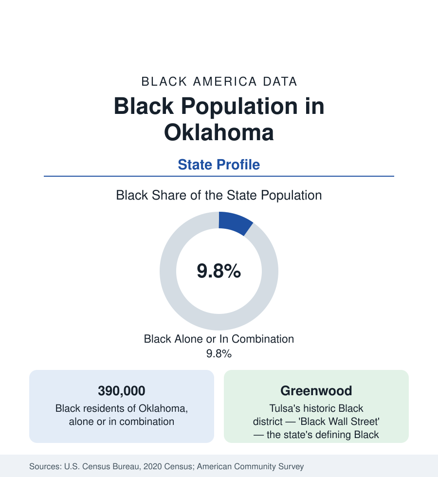

Black Census
Black Population in Oklahoma: Greenwood's State
About 390,000 Black Oklahomans — one in ten residents — between Oklahoma City, Tulsa's historic Greenwood, and the all-Black towns. The census profile.

Oklahoma holds about 390,000 Black residents — Black alone or in combination — roughly one in ten of its people, with Black alone at about 289,000, or 7.3 percent. Oklahoma's Black history is unlike any other state's: a territory that drew Black settlers as a promised land of self-governance, producing more all-Black towns than any state in the Union, the Freedmen communities of the Five Tribes, and Tulsa's Greenwood — the most famous Black business district in American history. The modern population divides between the two metros and a small-town landscape of unusual depth. This article profiles it.
The Two Metros
Oklahoma City holds the larger share: the capital city is roughly 15 to 16 percent Black (some 105,000 residents), centered historically on the Deep Deuce and the northeast side, with a metro Black population in the range of 155,000 spread through Midwest City (the Tinker Air Force Base suburb, roughly a fifth Black), Del City, Spencer, and the northeast suburbs. Tulsa, the second metro, holds about 110,000 Black residents in its metro — the city itself roughly a sixth Black — concentrated in North Tulsa, the districts beyond the railroad-and-highway line that has divided the city's data for a century. Lawton (Fort Sill) records the state's third community at roughly a fifth Black within the city, on the Army post's workforce. The metros together hold roughly two-thirds of Black Oklahoma.
Greenwood and the All-Black Towns
Greenwood, Tulsa's Black district, was by 1921 the most prosperous Black business community in America — its hotels, theaters, professional offices, and hundreds of businesses earning it the 'Black Wall Street' name — until the 1921 Tulsa Race Massacre destroyed some 35 blocks of it, a destruction the state's own commission documented in full a century later; the district's modern form, rebuilt by its survivors and now anchored by the Greenwood Cultural Center and a history center at its edge, is the state's central heritage site. Beyond Tulsa, Oklahoma's singular layer is its all-Black towns: more than fifty were founded in the territorial era, and thirteen survive as incorporated communities — Boley (the largest, once a town of thousands with its own banks and a college), Langston, Clearview, Taft, Rentiesville among them — most now villages of a few hundred whose census lines record a Black heritage geography found nowhere else at this density.
Langston and the Freedmen
Langston University, founded in 1897 in the all-Black town of the same name, is the state's HBCU and the West's historically Black land-grant — enrollment in the range of 2,000 — anchoring the town that shares its name and the state's Black professional formation. The second distinctive thread is tribal: the Freedmen — the formerly enslaved people held by the Five Tribes and their descendants, citizens of the tribal nations under the 1866 treaties in provisions the tribal courts and federal rulings of the current era have been re-litigating and, in the Cherokee and other nations' recent decisions, substantially affirming — form a Black Oklahoma population inside the tribal data as well as the state's, concentrated in the eastern counties (Muskogee, Okmulgee, Tahlequah's region) where the tribal nations are headquartered. It is the only population in this reference counted fully in two sovereignties' rolls at once.
Indicators and Change
Black Oklahoma's indicators run at the plains-South pattern: median income below the national Black figure, homeownership comparatively strong in the small-town and suburban data, attainment lifted by Langston and the metros' universities, and health outcomes at the difficult end of the public health tables (the state's overall health rankings pull every group's figures). The estimates show the metros gaining — Oklahoma City's suburbs fastest — the small towns continuing their long decline, and Tulsa's north side roughly stable. The energy economy's cycles register in the state data as they do in Texas's, moderated by the military and government anchors of the three metro economies.
Reading the Oklahoma Numbers
Oklahoma's profile is the West's deepest Black historical geography in a mid-sized modern population: 390,000 people whose map includes a world-famous district, thirteen surviving all-Black towns, an HBCU town, and a tribal-citizen population without parallel. The counts are modest; the density of significance is the highest in this section.
More in Black Census
The Black Population of the United States: Size, Definitions, and Distribution
The Black population of the United States totals 52.8 million — 15.4 percent of the nation. How the Census Bureau defines and counts the population, and where it lives.
Black Median Household Income in the United States
Black median household income stands at $56,490 in the Census Bureau's annual income report — how the figure is measured, how it compares, and what drives it.
The Black Poverty Rate: Levels, Children, and the Long Trend
The official Black poverty rate is 17.1 percent — against 11.1 percent nationally and 7.7 percent for non-Hispanic White Americans. How poverty is measured and what the data show.
Source: U.S. Census Bureau, 2020 Census; American Community Survey; Population Estimates Program.